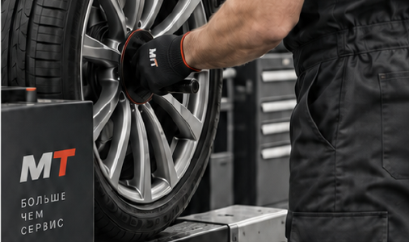

06 / COMMERCIAL CASE
MASTER TIRES / ШИНОМОНТАЖ
Master
Tires.
Сайт для шиномонтажа в Талицах. Собрали строгую визуальную систему, понятную запись и актуальную сетку услуг в один маршрут.
Открыть работающий сайт ↗- Роль
- Структура / дизайн / разработка
- Статус
- Commercial case
- Формат
- Адаптивный сайт

ЗАДАЧА
Показать точность
до первого звонка.
Сервис шиномонтажа требует короткого и понятного маршрута: человек должен быстро увидеть услуги, понять порядок записи и найти нужную информацию с телефона.
СТРУКТУРА
Сначала —
маршрут.
Собрали услуги и детали по приоритету: от первого экрана к конкретному действию. Навигация не спорит с содержанием, а поддерживает его.

ВИЗУАЛЬНОЕ НАПРАВЛЕНИЕ
Чёрный, белый
и сигнальный красный.
Крупная типографика помогает быстро понять услугу. Красный используется как точка действия, а не как декоративный шум.
АДАПТИВНАЯ ВЕРСИЯ
То же направление
на маленьком экране.
Сетка и кнопки собраны так, чтобы с телефона было легко выбрать услугу, открыть детали и перейти к записи.
Открыть mastertyres-msk.ru ↗